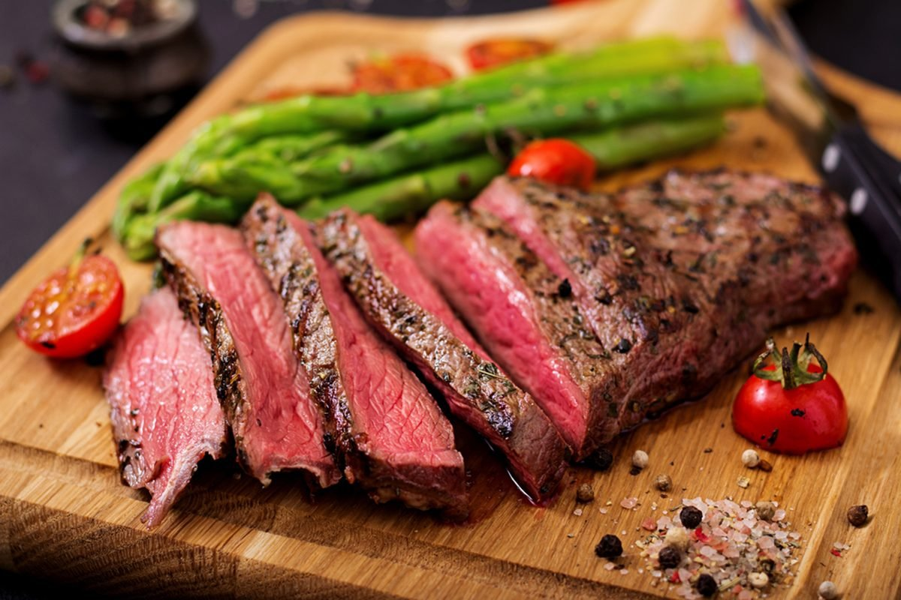

Steak

Above, I present a perfect medium rare ribeye steak
This recipe is very fast to make for individuals low on time, like developers.
Usually, in a total of 10 minutes, the entire dish should be finished.
Ingredients
- 12oz Ribeye
- Salt and pepper
- Baby tomatoes
- Asparagus
Steps
- Grab 2 separate non-stick pans and place one on high heat and the other on low heat.
- Season the steak and vegetables generously with salt & pepper
- Place steak on high heat pan for 3 minutes per side
- Now put vegetables on low heat pan and allow them to draw out their moisture and get sauteed. Normally 5 minutes should be enough.
- After the steak finishes it 6 minutes cooking, remove it from the pan and let it rest for 4 minutes.
- Vegetables will be also done by then, you can turn off the heat and leave them in the pan until steak finishes resting.
- After the remaining 4 minutes, everything will be finished and ready to it. All in under 10 minutes.
- Enjoy!